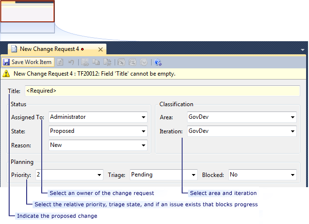
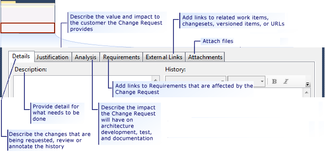

You can use change request work items to track and control all changes to the project. All change requests are initiated as the result of a deviation from the baseline, which consists of the original requirements that were identified for the project. For example, if a meeting with a user uncovers new requirements, a change request should be created to propose updating the requirements baseline.
In this topic
 Creating
a Change Request
Creating
a Change Request
When you realize that an original requirement must change, you create a change request work item and link it to the old requirement work item by using an Affects link type. A requirement work item that has details of what is new or has changed should also be created and linked to the change request. All change requests are extensively analyzed for impact on the user, product, and teams. During this analysis, use cases may be broken out for estimation. These new use case work items should be linked to the new requirement work item to provide traceability. This is accomplished by adding the use cases on the Use Cases tab of the requirement work item form.
The change request and resultant new work items must contain details of all new work that is required and all existing work that is to be removed, modified, or obviated. As the following illustrations show, you can specify the change that you are requesting in the Title field, the team member who owns the change, and other information about the request:

For more information about how to complete the work item, see Change Request (GovDev).
Analyzing
a Change Request
Before a change request is analyzed, it should be triaged by a configuration control board. A configuration control board is a group of people who are responsible for approving and denying change requests and who ensure that changes are implemented correctly. You can indicate that a request must be triaged by setting the Triage field in the work item to Pending. For more information, see Change Request (GovDev). Analysis of change requests can be a drain on resources, and it is important that the change request queue does not put undue demands on the team and affect the project timeline.
A change request should be analyzed to determine the scope of its impact on existing and planned work. The effect must be known so that it can be used to estimate the cost in person-hours to implement the change.
Analyze the risk of accepting the change. Are external teams dependent upon the code or feature that would be changed, and could their schedules be adversely affected? Could assignment of resources to this change adversely affect other important feature areas or requirements of the product?
As part of your analysis, request input from stakeholders and add that input to the change request work item. If the change requires changes to other planning documents, note that in the change request, and change those documents as appropriate. This will maintain the revision history and enable everyone to see the details. This mitigates risk from bad communication.
If a change request is accepted, change the State from Proposed (the default for new change requests) to Active.
Monitoring
Change Requests
While a change request is active, you can monitor it by using the Change Request query located in the Change Managment work item query folder for the GovDev for TFS 2010 v1.0 process template used for the project. Change requests should be processed in a reasonable amount of time.
If a change request does not receive the attention that it requires, escalate the matter by creating an issue work item. Link the new issue to the change request, and escalate the issue to get the change request impact assessment on track.